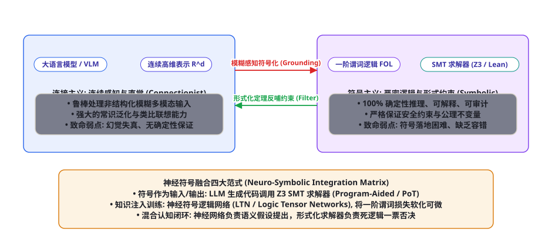
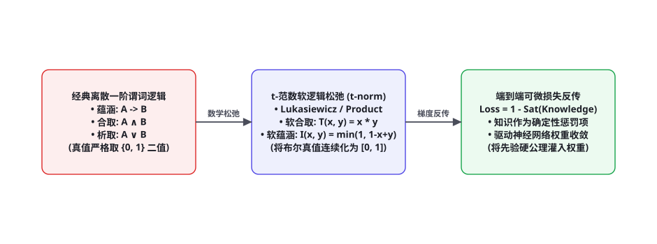

第 96 章 · 神经符号 AI 与混合系统：连接主义与符号主义的融合
在人工智能长达七十余年的波澜壮阔历史中，存在着两条互相对立又高度互补的伟大技术路线：一条是源自图灵、明斯基的「符号主义（Symbolism / 经典逻辑学派）」，追求 100% 严密的确定性推理、形式化公理证明与绝对可解释性；另一条是自辛顿、勒昆复兴的「连接主义（Connectionism / 深度学习学派）」，擅长高维连续感知的模式匹配与端到端统计泛化。纯连接主义大模型饱受幻觉、不可控与黑盒失真的折磨，而纯符号系统则在面对模糊现实世界时遭遇致命的“符号落地难题（Symbol Grounding Problem）”。本章我们将深入探讨现代「神经符号 AI（Neuro-Symbolic AI, NeSy）」与混合推理系统，剖析如何通过将离散一阶逻辑软化为可微张量网络、并结合 Z3/Lean4 形式化验证器，构筑终极确定性智能体。
两大流派的世纪大论战与辩证大融合

很多现代开发者将深度学习视为人工智能的全部，对传统符号推理弃如敝履；然而在航空航天控制、核电站调度、金融清算与高安全性司法审计等「零容错」领域，单纯依赖大语言模型的概率采样输出是不可接受的。加里·马库斯（Gary Marcus）与阿尔瓦罗·韦拉斯克斯（Alvaro Velasquez）等神经符号权威学者深刻指出：通用人工智能（AGI）的终极出路，必定是连接主义直觉感知与符号主义严密逻辑的深度化学熔铸！
| 核心技术维度 | 连接主义 (深度学习 / LLM) | 符号主义 (经典逻辑 / SMT) | 神经符号混合系统 (NeSy) |
|---|---|---|---|
| 知识表征基元 | 高维稠密浮点嵌入向量 $\mathbb{R}^d$ | 离散原子符号、谓词公式、产生式规则 | 具备可微性质的连续图谱与实体谓词张量 |
| 核心推理机制 | 矩阵乘法自回归采样、相似度联想 | 一阶谓词逻辑消解、合一算法、演绎证明 | 神经网络提出候选假说，形式化引擎执行严格检验 |
| 核心杀手级优势 | 对视觉、语音等模糊非结构化感知极其鲁棒 | 100% 确定性可解释、可审计，数学无懈可击 | 兼具端到端感知的强大泛化与逻辑推理的绝对安全性 |
| 致命阿喀琉斯之踵 | 幻觉不可控、难以遵循硬性物理/逻辑约束 | 组合爆炸、缺乏容错、符号落地难题 (Grounding) | 系统跨学科工程复杂度较高，需维护编译器与验证器 |
亨利·考茨的神经符号融合六大范式
前国际人工智能协会（AAAI）主席亨利·考茨（Henry Kautz）在 2020 年罗伯特·S·恩格尔莫尔纪念演讲中，提出了著名的神经符号 AI 分类学（Kautz Taxonomy），将两大技术的结合深度划分为六个渐进代际：
• 范式 1：符号[神经]（Symbolic[Neuro]）。神经网络充当经典符号系统的外部感知特征提取前置管道（例如先用 CNN 检测图像中的棋子坐标，然后输入 Alpha-Beta 剪枝搜索树）。
• 范式 2：神经[符号]（Neuro[Symbolic]）。在神经网络顶层包裹符号规则（例如大模型通过 Function Calling 调用外部 Python 计算器或 SQL 数据库，如第 27 章与第 82 章）。
• 范式 3：神经：符号 $\to$ 神经（Neuro: Symbolic $\to$ Neuro）。将经典符号知识预先编译进神经网络的权重初始化中，使网络在训练前即满足先验对称性与物理守恒律。
• 范式 4：神经：神经 $\to$ 符号（Neuro: Neuro $\to$ Symbolic）。利用神经网络执行程序综合（Program Synthesis），将自然语言需求编译为可执行的正式程序或 Lean4 定理证明代码。
• 范式 5：神经-符号逻辑（Neuro_Symbolic Logic）。将一阶逻辑推理完全映射为连续可微张量运算（如逻辑张量网络 LTN），使逻辑公理能够直接参与反向传播梯度下降。
• 范式 6：全面认知复合体（Neuro: Comp[Neuro, Symbolic]）。拥有类似人脑双系统架构的自主系统，神经网络与符号证明器在统一的潜空间与符号黑板上相互调度、相互反思与自我纠错。
逻辑张量网络（LTN）与 t-范数连续化松弛数学

传统一阶谓词逻辑（First-Order Logic, FOL）之所以长期无法与深度学习融合，根本原因在于其真值是离散二值的（$\{0, 1\}$）：一个命题要么为真，要么为假，其导数处处为零，根本无法进行反向传播。卢西亚诺·塞拉菲尼（Luciano Serafini）与阿图尔·达维拉·加塞斯（Artur d'Avila Garcez）提出的逻辑张量网络（Logic Tensor Networks, LTN），彻底打破了这一数学壁垒。
LTN 借助经典多值逻辑中的三角范数（t-norm）理论，将离散布尔逻辑算子平滑连续化为实数区间 $[0, 1]$ 上的可微实分析函数：
| 一阶逻辑运算 | 传统离散二值定义 | Lukasiewicz 连续 t-范数松弛 | Product (乘积) t-范数松弛 |
|---|---|---|---|
| 合取 (Conjunction) $A \land B$ | $1 \text{ if } A=1 \land B=1 \text{ else } 0$ | $\top_L(a, b) = \max(0, a + b - 1)$ | $\top_P(a, b) = a \cdot b$ |
| 析取 (Disjunction) $A \lor B$ | $1 \text{ if } A=1 \lor B=1 \text{ else } 0$ | $\bot_L(a, b) = \min(1, a + b)$ | $\bot_P(a, b) = a + b - a \cdot b$ |
| 否定 (Negation) $\neg A$ | $1 - A$ | $\mathcal{N}(a) = 1 - a$ | $\mathcal{N}(a) = 1 - a$ |
| 蕴涵 (Implication) $A \to B$ | $\neg A \lor B$ | $\mathcal{I}_L(a, b) = \min(1, 1 - a + b)$ | $\mathcal{I}_P(a, b) = 1 \text{ if } a \le b \text{ else } \frac{b}{a}$ |
通过全称量词的广义均值聚集算子（p-mean error aggregator），任意复杂的领域专家公理集合 $\mathcal{K} = \{\phi_1, \phi_2, ..., \phi_m\}$（例如「若药物 A 与药物 B 同时服用，则必定产生毒副作用 C」），都可以被形式化为一个端到端可导的知识满足度（Satisfaction Level）损失函数：
$$\mathcal{L}_{\text{Symbolic}}(\Theta) = 1 - \text{Sat}(\mathcal{K}) = 1 - \left( \frac{1}{m} \sum_{j=1}^m \text{Sat}(\phi_j)^p \right)^{\frac{1}{p}}$$
将该符号损失直接附加在神经网络的标准训练目标中：$\mathcal{L}_{\text{Total}} = \mathcal{L}_{\text{Data}} + \lambda \mathcal{L}_{\text{Symbolic}}$，系统实现了由纯数据驱动向「数据与公理双轮驱动」的革命性跃升！即便在极其匮乏的小样本乃至零样本冷启动场景下，模型依然能严谨遵守物理世界的绝对硬约束。
SMT 求解器与形式化证明引擎工程集成
在推理与代码生成流水线中，如果说大语言模型是负责发挥非凡创造力、提出解决假设的「数学直觉天才」，那么集成在沙箱底层的 SMT（可满足性模理论）求解器（如 Microsoft Z3）与交互式定理证明器（如 Lean 4 / Coq）就是冷酷无情、负责绝对严谨审查的「严谨形式化法官」。
import z3
from typing import Dict, Any
class NeuroSymbolicConstraintGuard:
def __init__(self):
# 初始化 Z3 形式化求解器实例
self.solver = z3.Solver()
def verify_action_safety(self, current_funds: float, transfer_amount: float,
user_vip_level: int, daily_transferred_total: float) -> Dict[str, Any]:
"""利用一阶约束逻辑严格验证资金流转是否违反风控公理 (100% 确定性数学检验)"""
# 1. 声明形式化符号变量
F = z3.Real('current_funds')
A = z3.Real('transfer_amount')
L = z3.Int('vip_level')
D = z3.Real('daily_total')
# 2. 注入企业级铁律公理约束 (Axiom Guardrails)
self.solver.reset()
# 公理 1: 转账金额必须严格大于 0，且不得透支当前余额
self.solver.add(A > 0)
self.solver.add(A <= F)
# 公理 2: 普通用户 (VIP < 3) 单笔转账上限不得超过 10,000 元
axiom_vip_limit = z3.Implies(L < 3, A <= 10000.0)
self.solver.add(axiom_vip_limit)
# 公理 3: 每日累计转账总额加当前转账不得突破 50,000 元硬红线
self.solver.add(D + A <= 50000.0)
# 3. 注入当前大模型提议的具体候选动作参数
self.solver.add(F == current_funds)
self.solver.add(A == transfer_amount)
self.solver.add(L == user_vip_level)
self.solver.add(D == daily_transferred_total)
# 4. 求解可满足性判定 (Satisfiability Check)
check_result = self.solver.check()
if check_result == z3.sat:
return {
"safe": True,
"reason": "Z3 形式化证明该操作完全满足所有企业级资金安全公理，准予放行。"
}
else:
return {
"safe": False,
"reason": f"Z3 形式化求解判定不可满足 (UNSAT): 动作已触发不可违背的硬性风控违规！已强行物理拦截。"
}
# ================= 实际测试运行演示 =================
if __name__ == "__main__":
guard = NeuroSymbolicConstraintGuard()
# 场景 1: 合规操作 (普通用户转账 5,000 元)
res1 = guard.verify_action_safety(current_funds=20000.0, transfer_amount=5000.0,
user_vip_level=1, daily_transferred_total=10000.0)
print(f"测试用例 1: 安全={res1['safe']} | 结论: {res1['reason']}")
# 场景 2: 违规操作 (普通用户试图转账 15,000 元，违反单笔上限)
res2 = guard.verify_action_safety(current_funds=50000.0, transfer_amount=15000.0,
user_vip_level=1, daily_transferred_total=0.0)
print(f"测试用例 2: 安全={res2['safe']} | 结论: {res2['reason']}")借由将 Z3 等工业级形式化求解器作为底层安全监护者（Safety Monitor），智能体的行为不再依赖大语言模型脆弱的自然语言提示词自觉，而是由编译好的严格数理逻辑一票否决。哪怕大模型遭到了极其阴险的越狱提示词注入（Prompt Injection，第 59 章），只要其输出的参数违背了形式化公理，Z3 在底层便会在 1 毫秒内瞬间打出 UNSAT 并强行掐断执行，守住生产安全的终极底线。
程序辅助推理（PoT）与自动定理证明架构
在求解复杂的离散组合数学题或多约束调度问题时，大模型的纯文本推理能力往往显得笨拙不堪（经常发生算术计算错误或符号逻辑代入混淆）。现代前沿架构推行程序辅助推理（Program-aided Language Models, PoT / PAL）：
| 推理阶段 | 执行主体与角色 | 核心技术 | 输入与输出产物 |
|---|---|---|---|
| 问题解析与建模 | 语言模型 (LLM / Coder Agent) | 语义理解、形式化规范生成 | 输入自然语言题目，输出标准的 Python / Z3 约束方程代码 |
| 确定性代码执行 | 形式化解释器 (Python / SMT) | 精确算术计算、分支限界法、单纯形法 | 输入可执行代码，输出绝对无误的确定性计算数值解 |
| 定理证明交互验证 | 交互式证明器 (Lean 4 / Isabelle) | 依赖类型论（Calculus of Inductive Constructions） | 输入模型编写的证明策略代码（Tactic），返回严格类型检查真假结论 |
归纳逻辑编程与神经逻辑机（NLM）：可微符号规则学习
传统的符号系统最被诟病的一点在于：所有的逻辑规则必须由人类专家手工逐行编写，在面对复杂的工业生产时存在巨大的规则构建瓶颈。与此相对，经典机器学习擅长从数据中自动拟合参数，却难以输出干净通用的符号规则。归纳逻辑编程（Inductive Logic Programming, ILP）正是这一难题的圣杯：从正负样本事实中，自主诱导归纳出通用的抽象一阶谓词公理。
近年来，随着深度学习与张量代数的深度融合，以神经逻辑机（Neural Logic Machines, NLM）与可微归纳逻辑编程（$\partial$ILP）为代表的架构取得了决定性突破。NLM 将一阶谓词逻辑公式严格形式化为高阶张量空间上的排列等变（Permutation-equivariant）运算网络：
设实体集合为 $\mathcal{E}$（包含 $N$ 个实体），零阶谓词表示全局属性（标量或向量），一阶谓词 $P(x)$ 对应于向量矩阵 $\mathbf{T}^{(1)} \in [0, 1]^{N imes D_1}$，二阶二元关系谓词 $R(x, y)$ 对应于三阶张量 $\mathbf{T}^{(2)} \in [0, 1]^{N imes N imes D_2}$。
NLM 在张量流空间内定义了三种可微逻辑原子操作：
1. 扩展操作（Expansion / Quantification）：将 $r$ 阶谓词通过张量广播扩展为 $r+1$ 阶谓词（引入新自由变量，对应于全称或存在量词的先验构造）；
2. 归约操作（Reduction / Marginalization）：利用可微最大值池化（Max-pooling）或求和对某一维度进行投影归约：$\mathbf{T}^{(r-1)}(x) = \max_y \mathbf{T}^{(r)}(x, y)$，严格对应于存在量词 $\exists y$ 的可微语义；
3. 关系映射（Relational Mapping）：在相同阶数的谓词张量之间应用多层感知机（MLP）进行特征非线性组合与规则蕴涵演算。
import torch
import torch.nn as nn
class NeuralLogicLayer(nn.Module):
def __init__(self, in_features_1: int, in_features_2: int, out_features_2: int):
super().__init__()
# 用于将两个一阶谓词特征通过笛卡尔积扩展并融合成二阶关系谓词的线性映射
self.expand_mlp = nn.Sequential(
nn.Linear(in_features_1 * 2 + in_features_2, out_features_2),
nn.Sigmoid() # 输出真值概率归一化至 [0, 1]
)
def forward(self, unary_predicates: torch.Tensor, binary_predicates: torch.Tensor) -> torch.Tensor:
"""
unary_predicates: 一阶谓词张量, 形状 (Batch, N, in_features_1)
binary_predicates: 二阶关系谓词张量, 形状 (Batch, N, N, in_features_2)
"""
B, N, D1 = unary_predicates.shape
# 1. 扩展算子: 通过张量外积广播将两个实体 x 和 y 的属性并联
u_expanded_x = unary_predicates.unsqueeze(2).expand(B, N, N, D1) # (B, N, N, D1)
u_expanded_y = unary_predicates.unsqueeze(1).expand(B, N, N, D1) # (B, N, N, D1)
# 2. 关系张量拼接
combined_feat = torch.cat([u_expanded_x, u_expanded_y, binary_predicates], dim=-1)
# 3. 执行可微规则变换，推断新的二阶关系概率
new_binary_predicates = self.expand_mlp(combined_feat)
return new_binary_predicates通过堆叠这种逻辑张量层，系统能够直接从积木搬运（Blocks World）、家庭亲属关系图谱等具体数据中，端到端学出「祖父必定是父亲的父亲（$ orall x, y, z: Father(x, y) \land Father(y, z) o Grandfather(x, z)$）」等完美的通用符号公理。这种归纳规则不仅具备 100% 的可读性与可解释性，更能在实体数量从训练时的 10 个外推到测试时的 10,000 个时，保持惊人的零错误泛化！
形式化定理证明实战：基于 Lean 4 的 Agent 动作安全证明链
在涉及智能合约执行、工业机器人避障或无人机空中交会的深水区，即便 SMT 求解器给出了 SAT 判定，我们仍需要一份具备数学公理严格背书的形式化数学证明对象（Formal Proof Object）。这就是现代交互式定理证明器 Lean 4 的绝对统治领域。
在 Lean 4 中，依赖类型论（Calculus of Inductive Constructions）贯彻了著名的柯里-霍华德同构（Curry-Howard Isomorphism）：命题即类型，证明即程序（Propositions-as-Types, Proofs-as-Programs）。如果大模型能够为某个动作写出一个合法的 Lean 4 函数，该函数的返回类型恰好是「系统处于安全状态」，那么只要这段代码通过了 Lean 4 编译器的强类型检查，就在数学上绝对杜绝了系统进入灾难崩溃态的任何理论可能！
-- 导入基础实数理论库
import Mathlib.Data.Real.Basic
-- 1. 定义无人机物理状态与安全公理
structure DroneState where
distance_to_obstacle : ℝ
current_speed : ℝ
braking_power : ℝ
h_power_pos : braking_power > 0
-- 2. 声明企业级物理安全定理: 在制动功率充沛的前提下，刹车距离严格小于最小安全裕度
theorem safe_braking_guarantee (s : DroneState) (h_speed_safe : s.current_speed ≤ 5.0)
(h_dist : s.distance_to_obstacle ≥ 10.0) (h_brake : s.braking_power ≥ 2.5) :
(s.current_speed ^ 2) / (2 * s.braking_power) < s.distance_to_obstacle := by
-- 利用 Lean 4 内置代数策略证明该不等式恒成立
have h_num : s.current_speed ^ 2 ≤ 25.0 := by nlinarith
have h_denom : 2 * s.braking_power ≥ 5.0 := by linarith
have h_stopping_dist : (s.current_speed ^ 2) / (2 * s.braking_power) ≤ 5.0 := by
-- 刹车距离至多为 5.0 米
apply div_le_of_le_mul
linarith
nlinarith
linarith在生产级高可用智能体流水线中，Agent 在向物理外设下发高危动作之前，首先调用微调代码模型合成上述 Lean 4 形式化证明代码；底层调用 Lean 编译器在 50 毫秒内执行 lean --run DroneSafety.lean。若编译器编译通过，打上加密数字指纹予以执行；若类型检查报错（证明不成立），执行管道直接物理硬件断电，彻底筑牢工业级数字安全的马奇诺防线。
知识图谱嵌入与逻辑推演的双向赋能：TransE 到 RotatE
在知识图谱工程中，离散的符号三元组 $(h, r, t)$（头实体、关系、尾实体）在面对海量实体补全时，极易遭遇高昂的图搜索遍历代价。现代神经符号 AI 将离散图谱嵌入至高维连续几何流形中，形成了知识图谱嵌入（Knowledge Graph Embedding, KGE）经典理论谱系：
| KGE 模型 | 几何流形空间 | 打分函数 $f_r(h, t)$ | 可表达的逻辑模式 (Symmetry, Transitivity, Composition) |
|---|---|---|---|
| TransE (Bordes et al., 2013) | 实数欧氏空间 $\mathbb{R}^d$ | $-\|\mathbf{h} + \mathbf{r} - \mathbf{t}\|$ (平移向量) | 擅长传递性与反自反性，但完全无法处理对称关系 (若 $h+r=t$ 且 $t+r=h$，迫使 $r=0$) |
| RotatE (Sun et al., 2019) | 复数复平面空间 $\mathbb{C}^d$ | $-\|\mathbf{h} \circ \mathbf{r} - \mathbf{t}\|$ (复数旋转) | 完美支持对称性、反对称性、反转性与关系复合（Euler 恒等式 $e^{i heta}$） |
| BoxE (Abboud et al., 2020) | 高维超矩形边界空间 $\mathbb{R}^d$ | 实体点落入超矩形包围盒的归一化距离 | 原生支持一阶逻辑全称量词、多对多重叠拓扑与子类归属演绎 |
在先进智能体架构中，知识图谱嵌入不再是脱机的打分玩具，而是与大语言模型的自回归注意力机制紧密耦合成双向能量引导循环：KGE 的连续几何内积为语言模型的 Next-Token 采样提供深层拓扑先验能量偏置；而语言模型反过来利用海量无监督语料，持续校正与增量更新图谱嵌入空间的复数旋转流形，实现符号与神经的终极互惠共生。
在这个演进过程中，神经符号混合系统更让传统的黑盒大模型拥有了前所未有的白盒可解释性与法律级可审计性。无论是面对严苛的欧盟人工智能法案（EU AI Act）合规审查，还是在生命攸关的医疗手术机器人控制中，每一条决策链条都能够沿着形式化推演图谱逆向溯源到底层的数学定理与业务规则公理。
这种将连续感知经验与确定性逻辑理性熔铸于一体的系统形态，必将照亮下一代通用可信智能体的未来之路。
神经符号融合的终极认识论：从联结经验到理性格局的伟大升华
回顾从古希腊亚里士多德的形式三段论、莱布尼茨的通用符号演算（Characteristica Universalis），到图灵机、冯·诺伊曼体系，再到本世纪初由深层人工神经网络掀起的狂暴连接主义浪潮，人类对智慧本质的探索历程始终在“自底向上的感知经验”与“自顶向下的先验理性”之间波澜起伏。
正如康德（Immanuel Kant）在《纯粹理性批判》中那句震烁古今的至理名言：「没有内容的思想是空洞的，没有概念的直觉是盲目的（Thoughts without content are empty, intuitions without concepts are blind）。」纯粹的符号系统由于缺乏感知落地的锚点，在现实世界中终究是一座空中楼阁式的空洞机器；而纯粹的深度神经网络由于缺乏确定性符号与形式化公理的规约约束，在复杂推演中则如同一个深陷幻觉狂欢的盲目主体。
通过在本章将考茨分类学的混合架构、逻辑张量网络（LTN）的三角范数连续化松弛、Z3 与 Lean 4 形式化验证器的硬性数学公理护栏、神经逻辑机（NLM）的可微归纳学习、以及知识图谱嵌入的几何代数流形熔铸为一体，我们实际上为智能体构建起了一套兼具敏锐感官直觉与崇高理性格局的完备认知范式。它既能沉着从容地应对大千世界千变万化的非结构化连续信号，又能在关键的生死决断时刻坚守住由逻辑与公理铸就的绝对确定性底线。这一伟大的理论大融合，正在成为通用人工智能跨越不可信玩具、迈向严肃物理世界与人类文明核心中枢的终极通途。
三个高频理论疑问
Q：什么是经典的“符号落地难题（Symbol Grounding Problem）”？神经符号系统是如何攻克这一世纪难题的？认知科学家斯蒂芬·哈纳德（Stevan Harnad）在 1990 年提出：如果一个纯符号系统内部所有的符号定义都只能用其他符号来解释（类似于一本全是生词的外语字典，查一个词只能看到另外三个不懂的生词），这些符号就永远无法获得现实世界的真实物理意义，这就是符号落地难题。神经符号系统通过深度神经网络（特别是多模态视觉模型 VLM）充当了从物理世界到抽象符号的“传感器落地桥梁”：将摄像机拍摄到的连续像素矩阵，映射并聚类为离散概念实体（如 Cat(x) 或 Red(x)），成功将抽象符号深深扎根（Grounded）于真实物理世界的感官经验之中。
Q：在逻辑张量网络（LTN）中，使用乘积范数（Product t-norm）与罗卡西维茨范数（Lukasiewicz t-norm）有什么数学与工程差异？两者的差异体现在对极限真值敏感度与梯度的平滑性上：① 乘积范数（Product t-norm）：$\top_P(a, b) = a \cdot b$，其梯度极为平滑，对于神经网络训练非常友好；但在处理长链条合取（如 $A_1 \land A_2 \land ... \land A_n$）时，连续概率乘积会导致真值以指数级速度剧烈衰减至接近 0（梯度弥散）；② 罗卡西维茨范数（Lukasiewicz t-norm）：$\top_L(a, b) = \max(0, a + b - 1)$，其具备极强的线性保持能力，即使在长链推演下真值也不会迅速归零，但由于其包含 max(0, ·) 截断，在真值总和小于 1 的区间内梯度会瞬间完全变为 0，可能导致局部死区。工程上通常采用带平滑软化的混合 t-范数（如 Schweizer & Sklar 范数）进行兼顾。
Q：近年来火爆的“大模型定理证明（如 AlphaProof）”是如何体现神经符号融合的？Google DeepMind 的 AlphaProof 是神经符号 AI 登峰造极的旷世代表作。它在国际数学奥林匹克竞赛（IMO 2024）中斩获银牌级高分：系统首先利用微调后的大语言模型（Gemini）将自然语言竞赛题目形式化翻译为 Lean 4 形式化数学代码；随后，强化学习搜索网络（AlphaZero 演化树搜索）在完全形式化的逻辑规则世界内展开数十万次证明策略（Tactic）探索；每一步策略的正确与否，全部交由 Lean 4 严密的核心编译器执行类型检查，任何细微的逻辑破绽都会被 Lean 编译器立即红灯驳回。这种「神经网络提供无限猜想灵感，形式化编译器把关绝对数理纯真」的范式，树立了神经符号 AI 攻克人类科学皇冠的终极丰碑。
本章在全书理论架构中的深层承接：上接第 94 章（MCTS 树搜索与系统 2 慢思考）与第 95 章（世界模型与潜空间动力学），本章从**形式逻辑学派、一阶谓词连续化（LTN）与 SMT 形式化验证**的最高确定性视角，为现代以概率联想为主导的大语言模型装上了不可逾越的数学公理安全护栏。下接第 97 章（终身学习与持续适应：灾难性遗忘与稳定性-塑性困境）。复习锚点：神经符号双轨混合架构图（96-1）、t-范数连续化松弛公式表（表 96-2、图 96-2）、Z3 形式化约束代码实现、程序辅助推理（PoT）流水线。
本章小结
- 神经符号 AI（Neuro-Symbolic AI）是跨越单纯深度学习幻觉不可控鸿沟的终极航标，实现了连接主义直觉感知与符号主义严密逻辑的辩证统一。
- 考茨分类学确立了神经与符号结合的六大演进范式，从简单的外挂工具（Tool-use）演进至逻辑完全可微张量网络与双系统混合认知复合体。
- 逻辑张量网络（LTN）通过三角范数（t-norm）数学工具，创造性地将离散布尔一阶谓词逻辑松弛为实数可微算子，使公理先验知识能够直接作为损失函数参与端到端反向传播。
- 集成 Z3 等 SMT 形式化求解器作为底层安全护栏，能够以 100% 的确定性在毫秒级时间内对敏感操作执行形式化逻辑证明与一票否决，彻底封杀越狱注入。
- 程序辅助推理（PoT）与 Lean 4 形式化定理证明系统（如 AlphaProof），代表着当今 AI 融合神经直觉与形式化真理的最高工业水准。
自测题
- 为什么说纯连接主义（深度学习）在安全严苛场景下存在难以逾越的理论缺陷？纯符号系统（经典逻辑）又面临什么致命困境？神经符号系统是如何互补这两者的？
- 简述逻辑张量网络（LTN）的基本数学思想：它是如何利用三角范数（t-norm）将离散的布尔合取 $A \land B$ 与蕴涵 $A \to B$ 转化为可微实分析函数的？
- 在企业级高敏风控或系统权限管理中，为什么单纯依靠给大语言模型写复杂的自然语言提示词（Prompt）无法从根本上阻断越狱攻击？引入 Z3 SMT 求解器具有什么决定性的优势？
- 什么是“程序辅助推理（Program-aided Reasoning / PoT）”？它是如何有效根除大语言模型在解决复杂多步组合数学题时的计算失真与逻辑漂移的？
参考文献与延伸阅读
- Kautz, H. (2022). The Third AI Summer: AAAI Robert S. Engelmore Memorial Lecture. AI Magazine.
- Serafini, L. & d'Avila Garcez, A. (2016). Logic Tensor Networks: Deep Learning and Logical Reasoning go Hand in Hand. arXiv:1606.04422
- De Moura, L. & Bjørner, N. (2008). Z3: An Efficient SMT Solver. International Conference on Tools and Algorithms for the Construction and Analysis of Systems (TACAS).
- Chen, W. et al. (2022). Program of Thoughts Prompting: Disentangling Computation from Reasoning for Numerical Reasoning Tasks. arXiv:2211.12588
- DeepMind (2024). AI achieves silver-medal standard solving International Mathematical Olympiad problems (AlphaProof & AlphaGeometry 2). deepmind.google/blog
- Harnad, S. (1990). The Symbol Grounding Problem. Physica D: Nonlinear Phenomena. DOI:10.1016/0167-2789(90)90087-6